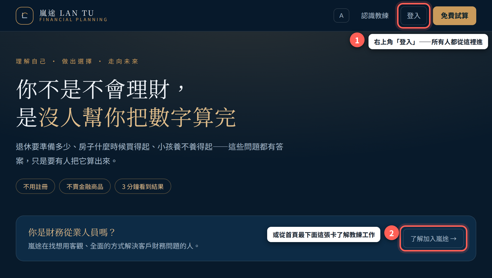
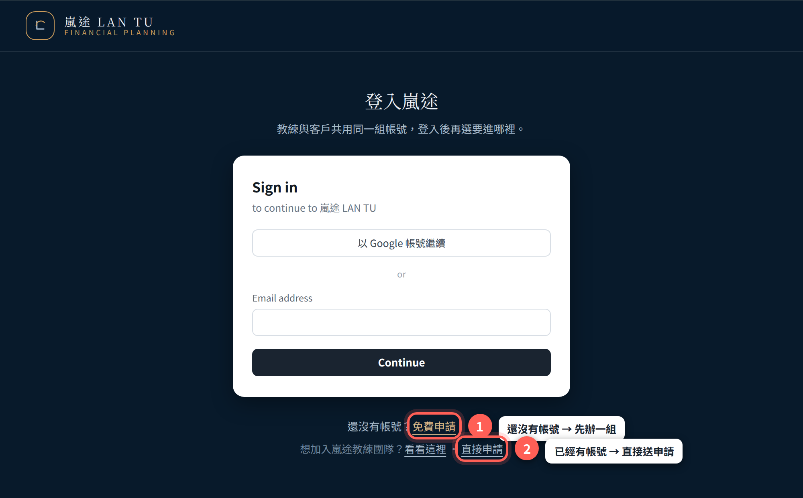
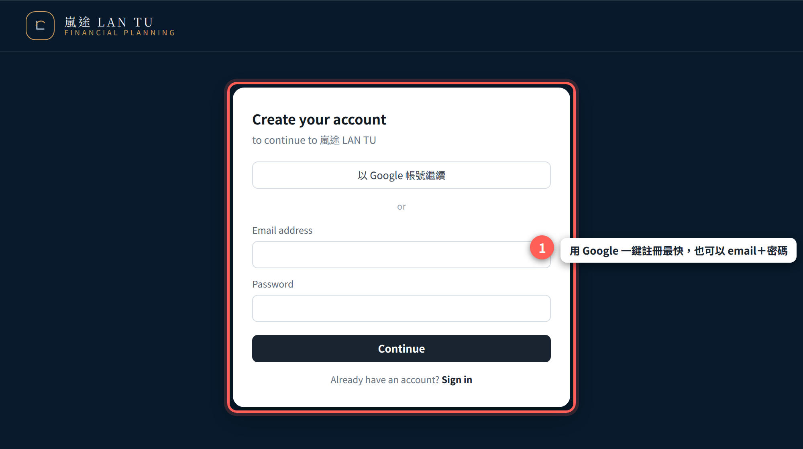
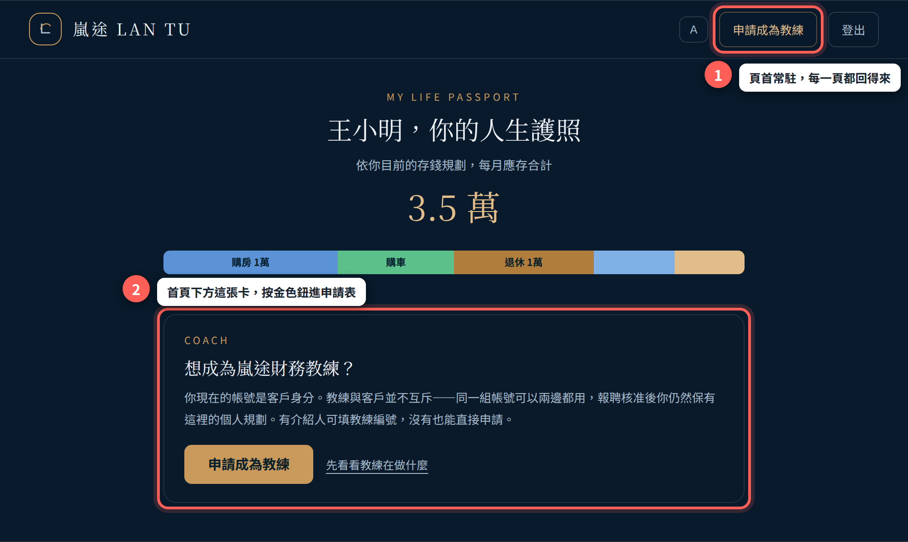
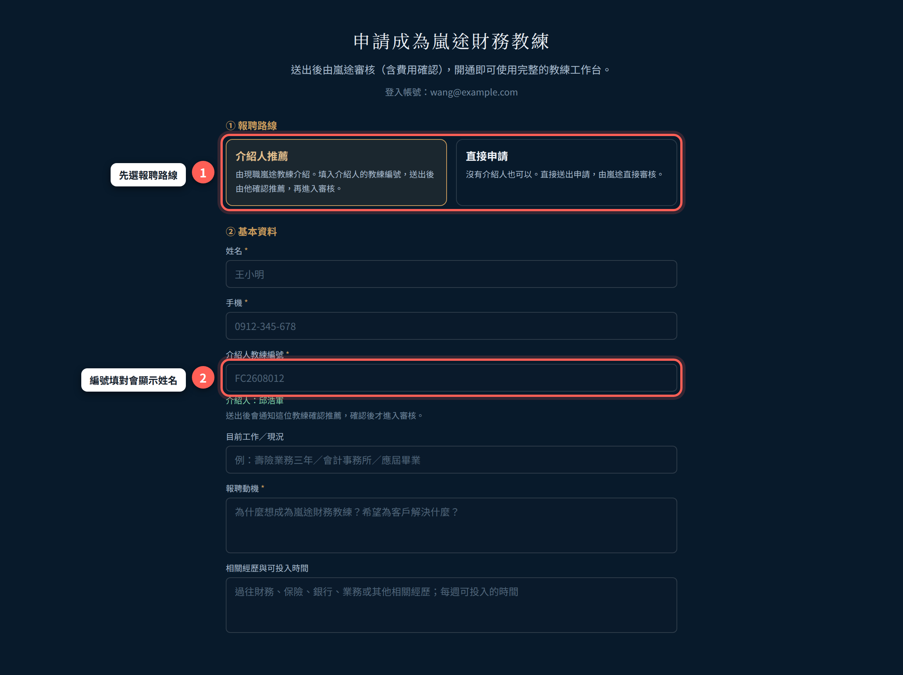
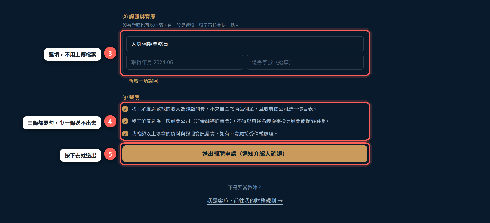
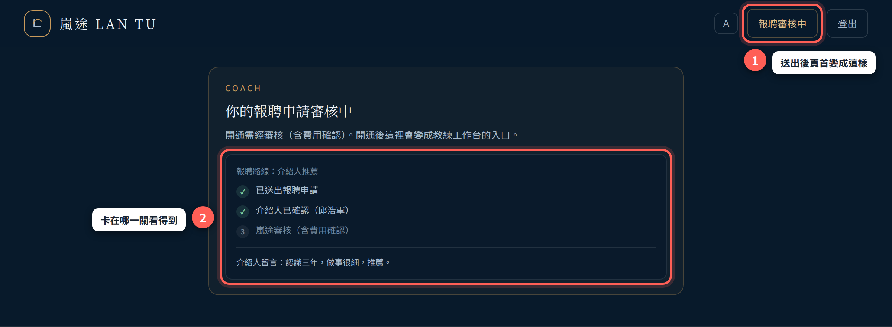
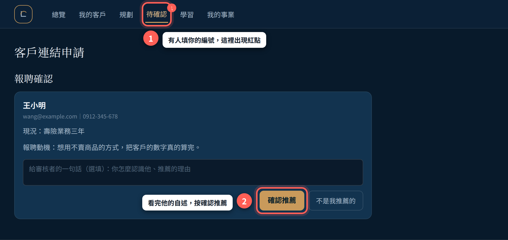

申請人可自行完成整個報聘申請流程，不需要任何人代辦。
線上報聘申請只有六個步驟，大約十分鐘即可完成：登入 → 註冊帳號 → 在客戶首頁按「申請成為教練」→ 填申請表 → 送出 → 等待審核。
嵐途只有一個登入入口。你先辦的是一組一般帳號（系統裡屬於「客戶」身分），報聘核准之後，同一組帳號就同時具備教練身分——不必再辦第二組，原本的個人財務規劃也都還在。所以第一次登入看到的是客戶畫面，這是正常的，不是走錯地方。
| 路線 | 說明 |
|---|---|
| 教練推薦 | 由現職嵐途教練推薦申請。填入推薦人的教練編號，送出後由推薦人確認，再進入嵐途審核。 |
| 直接申請 | 沒有推薦人也可以。不需要任何人先確認，直接送出、由嵐途直接審核。 |
證照與資歷是用選單和欄位填的，系統不收上傳檔，也不用先掃描證書。沒有證照一樣可以申請。
官網首頁右上角固定有一顆「登入」。首頁最下面另外有一張「你是財務從業人員嗎？」的卡片，想先了解教練在做什麼，可以從那裡進去看。

登入頁下方有兩條路：還沒有帳號，先按「免費申請」辦一組；已經有嵐途帳號（例如你本來就是客戶），直接按最下面那行的「直接申請」，會帶你到報聘申請表。

用 Google 帳號一鍵註冊最快，也可以用 email＋密碼。註冊完成會自動登入。

登入後會落在你自己的首頁（客戶介面）。報聘入口有兩個，按哪一個都一樣：頁首右上角的「申請成為教練」，或首頁下方那張說明卡裡的金色按鈕。

先選路線，下面的欄位會跟著變——選「教練推薦」才會出現推薦人教練編號那一欄。編號填對之後，畫面會當場顯示推薦人的姓名，可以確認有沒有打錯。
必填只有三個：
「目前工作／現況」與「相關經歷與可投入時間」是選填，但這兩欄是審核者最主要的判斷依據，建議填寫。

證照這一段是選填，最多可以填八項；每一項選類別，再補「取得年月」與「證書字號」。完整填寫有助於後續審核，但沒有證照不影響你能不能申請。
聲明三條都要勾，少勾一條送出鈕不會亮。按鈕下方會直接寫出你還缺哪一欄，照著補完就能送。

送出後回到你的首頁，頁首會從「申請成為教練」變成「報聘審核中」，首頁上也會出現一張進度卡——卡在哪一關，你自己看得到，不用回頭問人。

| 關卡 | 誰在動 | 你要做什麼 |
|---|---|---|
| 已送出 | 系統收件（送出當下就完成） | 不用做事 |
| 推薦人確認 | 你填的那位教練在他的後台按「確認推薦」 | 可以提醒他一聲 |
| 嵐途審核 | 嵐途核對證照／資歷，並確認費用收款 | 配合完成收款 |
你在這條流程裡只做三件事，其餘由申請人自行完成。
登入教練工作台後，到「個人資料」頁，最上方就是「我的教練編號」（例如 FC2608012）。這組編號同時也是客戶指定你的編號，直接複製給申請人即可。
申請人填了你的編號並送出後，教練工作台頁首的「待確認」分頁會出現紅點。這個分頁現在有三種待辦：客戶連結申請、共同執案邀請，以及報聘確認。

畫面上會直接攤開申請人的姓名、email、手機、目前現況、報聘動機。
下方那個輸入框是給審核者看的一句話（選填）：你怎麼認識他、為什麼推薦。這段話會一起送進審核，也會顯示在申請人自己的進度卡上。
嵐途核准時會自動把你設為他的推薦人（在他原本沒有推薦人的情況下），職級預設 C1、使用期限預設一年。你不需要另外做任何綁定動作。
教練與客戶不互斥，你也會用客戶介面做自己的財務規劃。已經開通的教練在客戶首頁看到的是「教練工作台」而不是「申請成為教練」——兩邊隨時互相切換得回去。
| 項目 | 規則 |
|---|---|
| 登入入口 | 官網右上角「登入」。教練與客戶共用同一組帳號。 |
| 報聘入口 | 登入後，客戶首頁頁首「申請成為教練」，或首頁下方的說明卡。 |
| 報聘路線 | 教練推薦（需編號、需推薦人確認）／直接申請（不需任何人先確認）。 |
| 必填欄位 | 姓名、手機、報聘動機；走教練推薦路線再加推薦人教練編號。 |
| 選填欄位 | 目前工作／現況、相關經歷與可投入時間、證照與資歷（最多 8 項）。 |
| 證明文件 | 不收上傳檔。證照以結構化欄位填寫，正本由嵐途在審核階段查驗。 |
| 聲明 | 三條全部勾選才送得出去：顧問服務收入／非金融特許事業／資料屬實。 |
| 重送申請 | 一人一份申請表，重送＝覆蓋，不會產生第二件。 |
| 審核項目 | 證照／資歷已核對、已確認費用收款。走教練推薦路線者另需推薦人已確認。 |
| 審核時間 | 資料完整並完成推薦人確認後，原則上於 1～3 個工作日內完成審核。 |
| 核准帶入 | 職級 C1、推薦人＝申請時填的推薦人、使用期限一年（原本已有值的欄位不會被覆蓋）。 |
| 審核期間 | 客戶介面照常使用，個人財務規劃不受影響。 |
本文件畫面依 2026 年 9 月版本繪製。用語以系統畫面為準：申請人、推薦人、直屬夥伴。